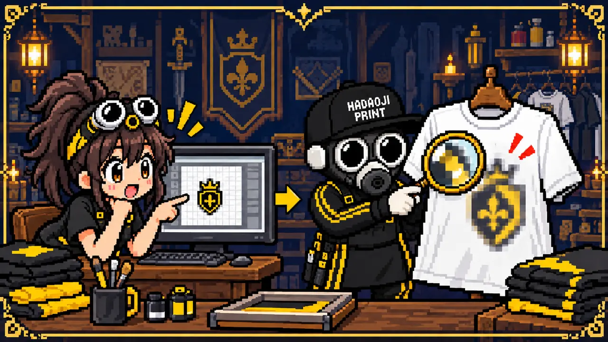
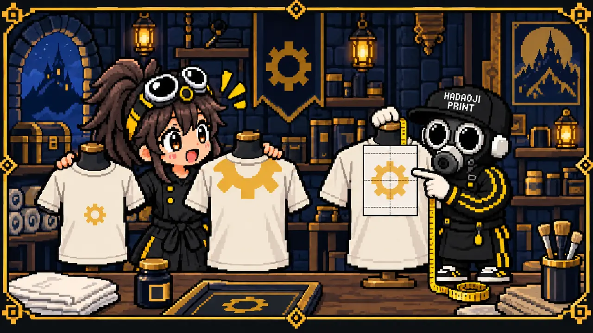
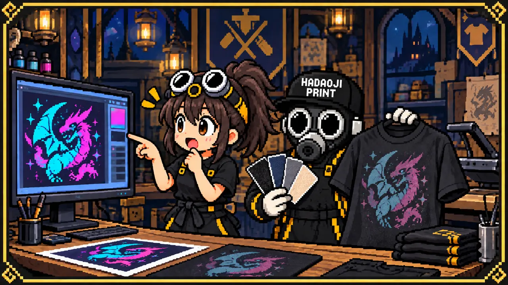
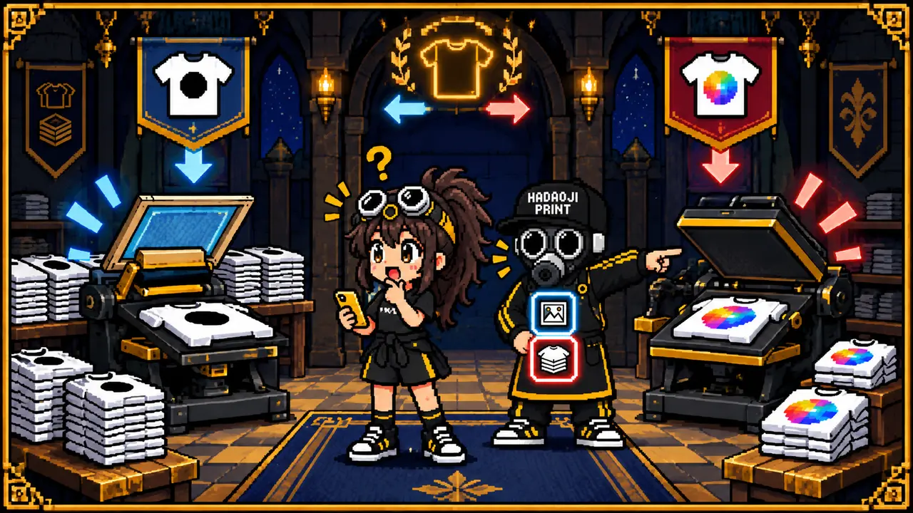
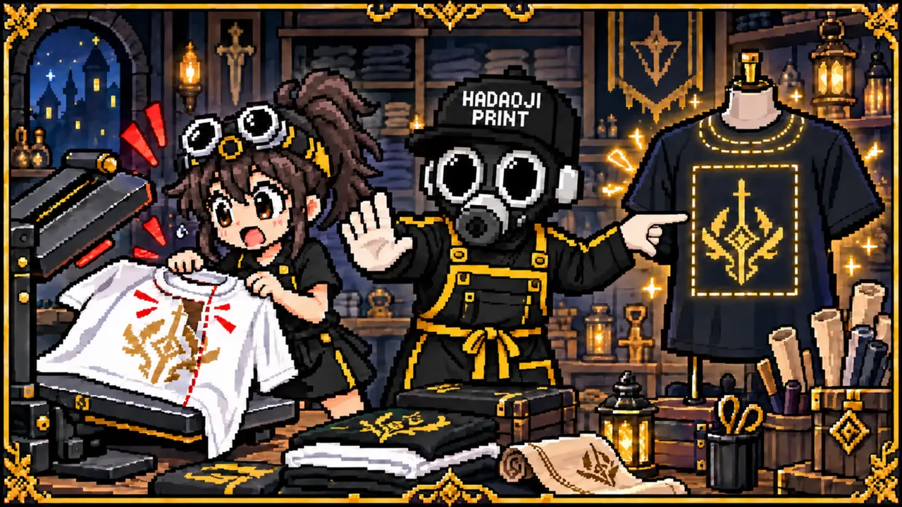
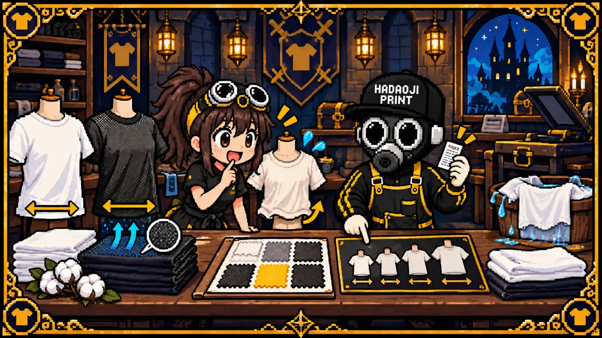
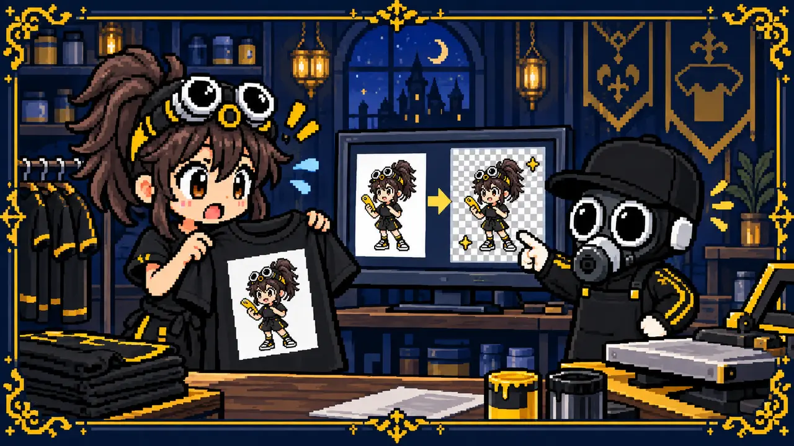
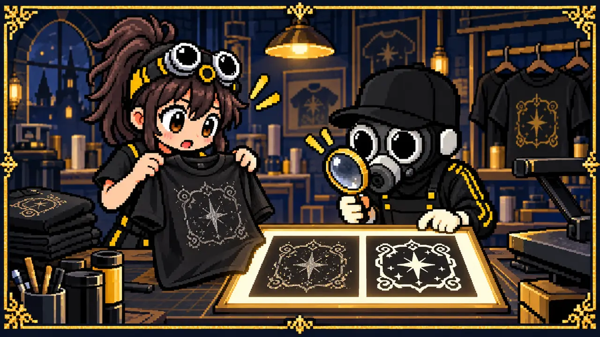
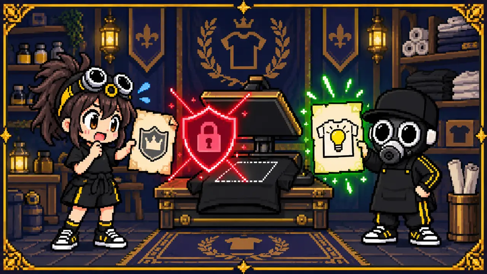
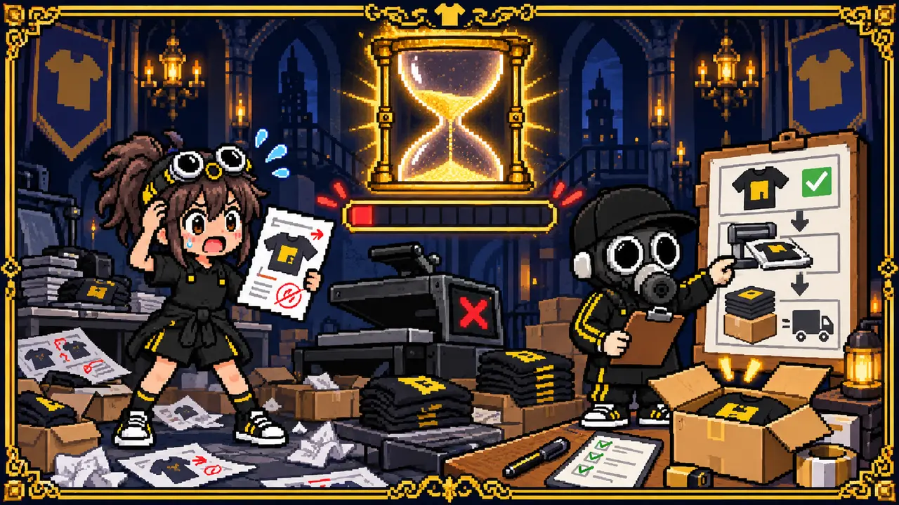

失敗の多くは、注文前の確認で防げます
オリジナルTシャツの失敗は、プリント作業だけが原因とは限りません。元画像の状態、仕上がりサイズの伝え方、ボディの素材、枚数に合わない加工方法など、制作前の小さな認識違いから起こります。
ここでは、ハダオジ店長とゆうが10の失敗ダンジョンを攻略。各項目で「何が起きるか」と「どう伝えれば防げるか」をセットで確認します。

分からないことを全部決めてから相談する必要はありません。用途・枚数・希望日・使いたい画像が分かれば、一緒に整理できます。
オリジナルTシャツの失敗原因と対策を早見表で確認
失敗を減らす基本は、画像を実際のプリントサイズで確認し、ウェア・加工方法・料金・納期を注文前にそろえることです。気になる症状を選ぶと、原因と具体的な確認方法へ進めます。
| 困りごと・失敗例 | 注文前に確認すること |
|---|---|
| 画像を拡大すると粗い | 解像度とプリント実寸 |
| サイズ・位置がイメージと違う | 横幅cm・基準位置・ウェアの実寸 |
| 画面とプリントの色が違う | 生地色・加工方法・色見本 |
| 少ない枚数なのに高額になった | 製版代・色数・加工方法 |
| 縫い目付近が欠ける | 段差と加工可能範囲 |
| 生地・着心地・サイズが想定外 | 素材・サイズ表・洗濯表示 |
| 白い四角や縁が印刷された | 背景透過と輪郭 |
| 細い線や文字が潰れる | 実寸での線幅・文字サイズ |
| 画像の利用許可が確認できない | 素材の利用条件と許諾 |
| 希望日に間に合わない | 在庫・仕様確定・発送日 |
失敗1：画像を大きくしたら粗くなった

LINEで送ったスクリーンショットや、SNSから保存した小さな画像は、画面ではきれいに見えても大きなプリントでは輪郭がギザギザになることがあります。小さい画像を引き伸ばしても、元にない細部は増えません。
解像度は「300ppi」と書かれているだけでは判断できません。例えば横幅20cmを300ppi相当で使うなら約2,362pxが目安です。少ない画素の画像へ300ppiの設定だけを付けても、細部は増えません。細い文字やロゴは、元のベクターデータや描き直しも含めて確認します。
失敗2：思ったより小さい・位置が低い

「胸に大きめ」「背中の真ん中」だけでは、完成像が人によって変わります。同じ横25cmでも、SサイズとXLサイズでは見え方が違います。配置はプリント幅と、襟や脇からの距離で共有するとズレを減らせます。
失敗3：画面で見た色と仕上がりが違う

スマホやモニターは光で色を見せますが、Tシャツはインクと生地の反射で見えます。画面の明るさ、ボディ色、素材、白インクの下地、加工方法により、蛍光感や淡い色、黒に近い階調は印象が変わります。
失敗4：枚数とデザインに合わない方法を選んだ

加工方法には向き不向きがあります。少数のフルカラーにシルクスクリーンを選ぶと製版代の割合が大きくなり、同じ1色を多数作るのにDTFを選ぶと、条件によっては単価や風合いで不利になることがあります。
1枚・2枚では、まとめ注文の1枚あたりの価格をそのまま当てはめられません。ウェア代・加工代・必要なデータ調整代・送料を含む税込総額で比べましょう。予算を超える場合は、残したい部分を伝え、プリントサイズ・箇所数・ウェアを見直す別案を相談できます。
失敗5：襟や縫い目に近く、プリントが欠けた

熱プレスや印刷は、できるだけ平らな面で行います。襟、脇、ポケット、ファスナー、厚い縫い目の近くは圧力が均一になりにくく、欠け・圧着不足・段差の跡が起こることがあります。袖をぐるりと一周するような配置も、設備やボディ形状によってはできません。
失敗6：生地・サイズ・洗濯後の印象が想定外

綿Tシャツとドライ素材では、肌触り・光沢・透け感・プリントのなじみ方が違います。同じ表記サイズでも品番ごとに身幅や丈は異なり、乾燥機などの扱いで縮みやプリントへの負担が生じることもあります。
失敗7：画像の白い背景まで印刷された

画像の背景が白く見えていても、透明とは限りません。JPEG画像やスクリーンショットは基本的に背景を持つため、濃色Tシャツへプリントすると、デザインの周囲に白い四角がそのまま出ることがあります。
失敗8：細い線や小さな文字が潰れた

画面を拡大すれば見える細線や小文字でも、インク・フィルム・生地には再現できる限界があります。特にかすれた書体、細い抜き線、複雑な装飾は、縮小すると潰れたり消えたりしやすくなります。
失敗9：権利のある画像で制作できなかった

インターネットで見つけた画像、企業やチームのロゴ、漫画・ゲームのキャラクター、著名人の写真などは、自由にTシャツへ使えるとは限りません。個人で着る目的でも、制作会社が権利確認をできない場合は注文を受けられないことがあります。
失敗10：直前の変更で希望日に間に合わなかった

Tシャツの取り寄せ、データ確認、見積もり、入金、プリント、検品、発送にはそれぞれ時間が必要です。注文後に枚数・サイズ・デザイン・加工位置が変わると、材料の再手配やデータの作り直しが発生し、当初の納期に間に合わなくなることがあります。
プリントが剥がれた・色や位置が違った場合の対処
受け取ったTシャツに気になる点があれば、まずは全体と該当箇所を撮影し、注文時のデータ・確認画像・仕様と見比べます。洗濯後に変化した場合は、洗濯・乾燥方法と使用回数も分かる範囲で制作店へ伝えてください。
自己判断でアイロンや接着剤を使って直す前に、制作店へ確認しましょう。プリント方法と生地によって対応が異なります。作り直しや補修の可否は、仕上がりの状態、事前に合意した仕様、制作店の規定を確認して判断します。
注文前には、仕上がり確認の範囲と、洗濯・乾燥機・アイロンの扱いも聞いておくと安心です。ウェアの洗濯表示と、加工店が案内するプリントのケア方法を合わせて確認してください。
Tシャツプリントの失敗を防ぐためのFAQ
スマホの写真やスクリーンショットでも作れますか？
画像の画素数とプリントする大きさによります。元画像を共有し、輪郭や文字を実寸で確認します。小さめにする、背景を整える、ロゴを描き直すなどの方法もあります。低解像度画像の確認方法を参照してください。
プリントの大きさ・位置はどう伝えればいいですか？
横幅をcmで指定し、襟下など基準にする位置も共有します。手持ちのTシャツへ実寸の紙を当てた写真が役立ちます。HPSで配置イメージを作る場合も、最終的な実寸は制作側と確認してください。
1枚だけ作るときは、どの方法が向いていますか？
製版代のかからないDTFは、少数のフルカラーデザインで比較しやすい方法です。ただし素材・サイズ・風合いなどにより向く方法が変わります。1枚から作る方法と加工料金を確認し、税込総額で検討しましょう。
背景を透明にしたPNGなら、白い縁は出ませんか？
透過PNGでも、輪郭に白い画素や半透明の画素が残っている場合があります。濃色の背景に置いて縁を確認し、白いデザイン部分を残すかも制作側へ伝えます。
注文前に送ると失敗を減らせる6項目

全部が決まっていなくても、「ここまでは決まっている」と送ればいいんだね。分からない部分は相談しながら決められる！
MISSION COMPLETE!
まだ何も決まっていなくても大丈夫
「この画像は使える？」「予算を超えそう」「位置が不安」など、気になる点と画像・枚数を送ってください。残したいデザインと目安のご予算もあれば、仕様の別案を一緒に考えます。正式な総額を確認してから注文を決められます。
無料見積もりへ ▶裏画像と不安な点をLINEで相談▶実際のウェアプリント相談・制作経験をもとに内容を確認しています。最終更新：2026年10月14日 運営者・編集方針